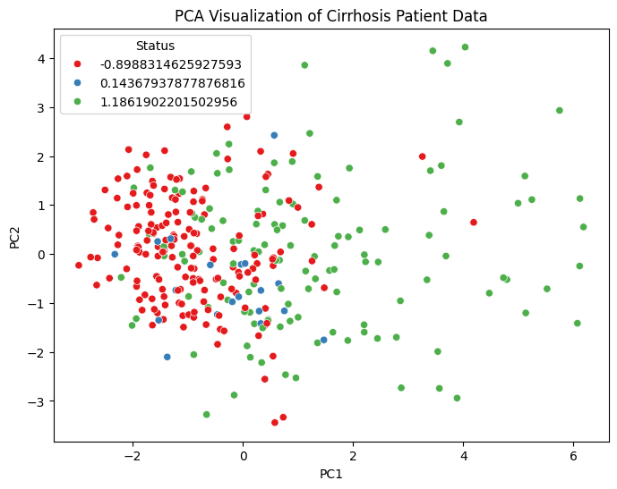

Prediksi Kelangsungan hidup pasien sirosis#
Data Understanding#
Sumber Data#
Berikut ini link dataset:https://archive.ics.uci.edu/dataset/878/cirrhosis+patient+survival+prediction+dataset-1
pip install ucimlrepo
Collecting ucimlrepo
Downloading ucimlrepo-0.0.7-py3-none-any.whl.metadata (5.5 kB)
Requirement already satisfied: pandas>=1.0.0 in /usr/local/lib/python3.11/dist-packages (from ucimlrepo) (2.2.2)
Requirement already satisfied: certifi>=2020.12.5 in /usr/local/lib/python3.11/dist-packages (from ucimlrepo) (2025.6.15)
Requirement already satisfied: numpy>=1.23.2 in /usr/local/lib/python3.11/dist-packages (from pandas>=1.0.0->ucimlrepo) (2.0.2)
Requirement already satisfied: python-dateutil>=2.8.2 in /usr/local/lib/python3.11/dist-packages (from pandas>=1.0.0->ucimlrepo) (2.9.0.post0)
Requirement already satisfied: pytz>=2020.1 in /usr/local/lib/python3.11/dist-packages (from pandas>=1.0.0->ucimlrepo) (2025.2)
Requirement already satisfied: tzdata>=2022.7 in /usr/local/lib/python3.11/dist-packages (from pandas>=1.0.0->ucimlrepo) (2025.2)
Requirement already satisfied: six>=1.5 in /usr/local/lib/python3.11/dist-packages (from python-dateutil>=2.8.2->pandas>=1.0.0->ucimlrepo) (1.17.0)
Downloading ucimlrepo-0.0.7-py3-none-any.whl (8.0 kB)
Installing collected packages: ucimlrepo
Successfully installed ucimlrepo-0.0.7
from ucimlrepo import fetch_ucirepo
# fetch dataset
cirrhosis_patient_survival_prediction = fetch_ucirepo(id=878)
# data (as pandas dataframes)
X = cirrhosis_patient_survival_prediction.data.features
y = cirrhosis_patient_survival_prediction.data.targets
# metadata
print(cirrhosis_patient_survival_prediction.metadata)
# variable information
print(cirrhosis_patient_survival_prediction.variables)
{'uci_id': 878, 'name': 'Cirrhosis Patient Survival Prediction', 'repository_url': 'https://archive.ics.uci.edu/dataset/878/cirrhosis+patient+survival+prediction+dataset-1', 'data_url': 'https://archive.ics.uci.edu/static/public/878/data.csv', 'abstract': 'Utilize 17 clinical features for predicting survival state of patients with liver cirrhosis. The survival states include 0 = D (death), 1 = C (censored), 2 = CL (censored due to liver transplantation).', 'area': 'Health and Medicine', 'tasks': ['Classification'], 'characteristics': ['Tabular'], 'num_instances': 418, 'num_features': 17, 'feature_types': ['Real', 'Categorical'], 'demographics': ['Age', 'Sex'], 'target_col': ['Status'], 'index_col': ['ID'], 'has_missing_values': 'yes', 'missing_values_symbol': 'NaN', 'year_of_dataset_creation': 1989, 'last_updated': 'Fri Nov 03 2023', 'dataset_doi': '10.24432/C5R02G', 'creators': ['E. Dickson', 'P. Grambsch', 'T. Fleming', 'L. Fisher', 'A. Langworthy'], 'intro_paper': {'ID': 296, 'type': 'NATIVE', 'title': 'Prognosis in primary biliary cirrhosis: Model for decision making', 'authors': 'E. Dickson, P. Grambsch, T. Fleming, L. Fisher, A. Langworthy', 'venue': 'Hepatology', 'year': 1989, 'journal': None, 'DOI': None, 'URL': 'https://www.semanticscholar.org/paper/db1487216b8a4b26f5e5078ea9109ac9d8355b65', 'sha': None, 'corpus': None, 'arxiv': None, 'mag': None, 'acl': None, 'pmid': None, 'pmcid': None}, 'additional_info': {'summary': "During 1974 to 1984, 424 PBC patients referred to the Mayo Clinic qualified for the randomized placebo-controlled trial testing the drug D-penicillamine. Of these, the initial 312 patients took part in the trial and have mostly comprehensive data. The remaining 112 patients didn't join the clinical trial but agreed to record basic metrics and undergo survival tracking. Six of these patients were soon untraceable after their diagnosis, leaving data for 106 of these individuals in addition to the 312 who were part of the randomized trial.", 'purpose': 'Cirrhosis results from prolonged liver damage, leading to extensive scarring, often due to conditions like hepatitis or chronic alcohol consumption. The data provided is sourced from a Mayo Clinic study on primary biliary cirrhosis (PBC) of the liver carried out from 1974 to 1984.', 'funded_by': 'Mayo Clinic', 'instances_represent': 'People', 'recommended_data_splits': None, 'sensitive_data': 'Gender, Age', 'preprocessing_description': '1. Drop all the rows where miss value (NA) were present in the Drug column\n2. Impute missing values with mean results\n3. One-hot encoding for all category attributes', 'variable_info': '1. ID: unique identifier\n2. N_Days: number of days between registration and the earlier of death, transplantation, or study analysis time in July 1986\n3. Status: status of the patient C (censored), CL (censored due to liver tx), or D (death)\n4. Drug: type of drug D-penicillamine or placebo\n5. Age: age in [days]\n6. Sex: M (male) or F (female)\n7. Ascites: presence of ascites N (No) or Y (Yes)\n8. Hepatomegaly: presence of hepatomegaly N (No) or Y (Yes)\n9. Spiders: presence of spiders N (No) or Y (Yes)\n10. Edema: presence of edema N (no edema and no diuretic therapy for edema), S (edema present without diuretics, or edema resolved by diuretics), or Y (edema despite diuretic therapy)\n11. Bilirubin: serum bilirubin in [mg/dl]\n12. Cholesterol: serum cholesterol in [mg/dl]\n13. Albumin: albumin in [gm/dl]\n14. Copper: urine copper in [ug/day]\n15. Alk_Phos: alkaline phosphatase in [U/liter]\n16. SGOT: SGOT in [U/ml]\n17. Triglycerides: triglicerides in [mg/dl]\n18. Platelets: platelets per cubic [ml/1000]\n19. Prothrombin: prothrombin time in seconds [s]\n20. Stage: histologic stage of disease (1, 2, 3, or 4)\n', 'citation': 'Fleming, Thomas R., and David P. Harrington. Counting processes and survival analysis. Vol. 625. John Wiley & Sons, 2013.'}}
name role type demographic \
0 ID ID Integer None
1 N_Days Other Integer None
2 Status Target Categorical None
3 Drug Feature Categorical None
4 Age Feature Integer Age
5 Sex Feature Categorical Sex
6 Ascites Feature Categorical None
7 Hepatomegaly Feature Categorical None
8 Spiders Feature Categorical None
9 Edema Feature Categorical None
10 Bilirubin Feature Continuous None
11 Cholesterol Feature Integer None
12 Albumin Feature Continuous None
13 Copper Feature Integer None
14 Alk_Phos Feature Continuous None
15 SGOT Feature Continuous None
16 Tryglicerides Feature Integer None
17 Platelets Feature Integer None
18 Prothrombin Feature Continuous None
19 Stage Feature Categorical None
description units missing_values
0 unique identifier None no
1 number of days between registration and the ea... None no
2 status of the patient C (censored), CL (censor... None no
3 type of drug D-penicillamine or placebo None yes
4 age days no
5 M (male) or F (female) None no
6 presence of ascites N (No) or Y (Yes) None yes
7 presence of hepatomegaly N (No) or Y (Yes) None yes
8 presence of spiders N (No) or Y (Yes) None yes
9 presence of edema N (no edema and no diuretic ... None no
10 serum bilirubin mg/dl no
11 serum cholesterol mg/dl yes
12 albumin gm/dl no
13 urine copper ug/day yes
14 alkaline phosphatase U/liter yes
15 SGOT U/ml yes
16 tryglicerides None yes
17 platelets per cubic ml/1000 yes
18 prothrombin time s yes
19 histologic stage of disease (1, 2, 3, or 4) None yes
Preprocessing Data#
import pandas as pd
import numpy as np
from ucimlrepo import fetch_ucirepo
from sklearn.preprocessing import LabelEncoder, StandardScaler
import seaborn as sns
import matplotlib.pyplot as plt
# Ambil data
data = fetch_ucirepo(id=878)
X = data.data.features.copy()
y = data.data.targets.copy()
# Gabungkan data dan target
df = pd.concat([X, y], axis=1)
# Lihat informasi awal
print(df.info())
print(df.isnull().sum()) # Cek missing values
# Drop baris dengan missing values (atau bisa gunakan imputasi jika ingin lebih kompleks)
df_clean = df.dropna()
# Cek ulang
print("Setelah menghapus missing value:", df_clean.shape)
# Label encoding kolom kategorikal
le = LabelEncoder()
for col in df_clean.select_dtypes(include=['object']).columns:
df_clean[col] = le.fit_transform(df_clean[col])
# Normalisasi fitur numerik
scaler = StandardScaler()
numerical_cols = df_clean.select_dtypes(include=['int64', 'float64']).columns
df_clean[numerical_cols] = scaler.fit_transform(df_clean[numerical_cols])
plt.figure(figsize=(14, 10))
sns.heatmap(df_clean.corr(), cmap='coolwarm', center=0)
plt.title("Heatmap Korelasi Fitur - Cirrhosis Dataset")
plt.show()
sns.countplot(data=df_clean, x='Status')
plt.title("Distribusi Status Kelangsungan Hidup Pasien Sirosis")
plt.xlabel("Status (0 = meninggal, 1 = hidup, dst.)")
plt.show()
sns.boxplot(data=df_clean, x="Status", y="Bilirubin")
plt.title("Distribusi Bilirubin Berdasarkan Status Pasien")
plt.show()
<class 'pandas.core.frame.DataFrame'>
RangeIndex: 418 entries, 0 to 417
Data columns (total 18 columns):
# Column Non-Null Count Dtype
--- ------ -------------- -----
0 Drug 313 non-null object
1 Age 418 non-null int64
2 Sex 418 non-null object
3 Ascites 313 non-null object
4 Hepatomegaly 313 non-null object
5 Spiders 313 non-null object
6 Edema 418 non-null object
7 Bilirubin 418 non-null float64
8 Cholesterol 312 non-null object
9 Albumin 418 non-null float64
10 Copper 312 non-null object
11 Alk_Phos 312 non-null float64
12 SGOT 312 non-null float64
13 Tryglicerides 312 non-null object
14 Platelets 411 non-null object
15 Prothrombin 416 non-null float64
16 Stage 412 non-null float64
17 Status 418 non-null object
dtypes: float64(6), int64(1), object(11)
memory usage: 58.9+ KB
None
Drug 105
Age 0
Sex 0
Ascites 105
Hepatomegaly 105
Spiders 105
Edema 0
Bilirubin 0
Cholesterol 106
Albumin 0
Copper 106
Alk_Phos 106
SGOT 106
Tryglicerides 106
Platelets 7
Prothrombin 2
Stage 6
Status 0
dtype: int64
Setelah menghapus missing value: (312, 18)
/tmp/ipython-input-3-3222893454.py:29: SettingWithCopyWarning:
A value is trying to be set on a copy of a slice from a DataFrame.
Try using .loc[row_indexer,col_indexer] = value instead
See the caveats in the documentation: https://pandas.pydata.org/pandas-docs/stable/user_guide/indexing.html#returning-a-view-versus-a-copy
df_clean[col] = le.fit_transform(df_clean[col])
/tmp/ipython-input-3-3222893454.py:29: SettingWithCopyWarning:
A value is trying to be set on a copy of a slice from a DataFrame.
Try using .loc[row_indexer,col_indexer] = value instead
See the caveats in the documentation: https://pandas.pydata.org/pandas-docs/stable/user_guide/indexing.html#returning-a-view-versus-a-copy
df_clean[col] = le.fit_transform(df_clean[col])
/tmp/ipython-input-3-3222893454.py:29: SettingWithCopyWarning:
A value is trying to be set on a copy of a slice from a DataFrame.
Try using .loc[row_indexer,col_indexer] = value instead
See the caveats in the documentation: https://pandas.pydata.org/pandas-docs/stable/user_guide/indexing.html#returning-a-view-versus-a-copy
df_clean[col] = le.fit_transform(df_clean[col])
/tmp/ipython-input-3-3222893454.py:29: SettingWithCopyWarning:
A value is trying to be set on a copy of a slice from a DataFrame.
Try using .loc[row_indexer,col_indexer] = value instead
See the caveats in the documentation: https://pandas.pydata.org/pandas-docs/stable/user_guide/indexing.html#returning-a-view-versus-a-copy
df_clean[col] = le.fit_transform(df_clean[col])
/tmp/ipython-input-3-3222893454.py:29: SettingWithCopyWarning:
A value is trying to be set on a copy of a slice from a DataFrame.
Try using .loc[row_indexer,col_indexer] = value instead
See the caveats in the documentation: https://pandas.pydata.org/pandas-docs/stable/user_guide/indexing.html#returning-a-view-versus-a-copy
df_clean[col] = le.fit_transform(df_clean[col])
/tmp/ipython-input-3-3222893454.py:29: SettingWithCopyWarning:
A value is trying to be set on a copy of a slice from a DataFrame.
Try using .loc[row_indexer,col_indexer] = value instead
See the caveats in the documentation: https://pandas.pydata.org/pandas-docs/stable/user_guide/indexing.html#returning-a-view-versus-a-copy
df_clean[col] = le.fit_transform(df_clean[col])
/tmp/ipython-input-3-3222893454.py:29: SettingWithCopyWarning:
A value is trying to be set on a copy of a slice from a DataFrame.
Try using .loc[row_indexer,col_indexer] = value instead
See the caveats in the documentation: https://pandas.pydata.org/pandas-docs/stable/user_guide/indexing.html#returning-a-view-versus-a-copy
df_clean[col] = le.fit_transform(df_clean[col])
/tmp/ipython-input-3-3222893454.py:29: SettingWithCopyWarning:
A value is trying to be set on a copy of a slice from a DataFrame.
Try using .loc[row_indexer,col_indexer] = value instead
See the caveats in the documentation: https://pandas.pydata.org/pandas-docs/stable/user_guide/indexing.html#returning-a-view-versus-a-copy
df_clean[col] = le.fit_transform(df_clean[col])
/tmp/ipython-input-3-3222893454.py:29: SettingWithCopyWarning:
A value is trying to be set on a copy of a slice from a DataFrame.
Try using .loc[row_indexer,col_indexer] = value instead
See the caveats in the documentation: https://pandas.pydata.org/pandas-docs/stable/user_guide/indexing.html#returning-a-view-versus-a-copy
df_clean[col] = le.fit_transform(df_clean[col])
/tmp/ipython-input-3-3222893454.py:29: SettingWithCopyWarning:
A value is trying to be set on a copy of a slice from a DataFrame.
Try using .loc[row_indexer,col_indexer] = value instead
See the caveats in the documentation: https://pandas.pydata.org/pandas-docs/stable/user_guide/indexing.html#returning-a-view-versus-a-copy
df_clean[col] = le.fit_transform(df_clean[col])
/tmp/ipython-input-3-3222893454.py:29: SettingWithCopyWarning:
A value is trying to be set on a copy of a slice from a DataFrame.
Try using .loc[row_indexer,col_indexer] = value instead
See the caveats in the documentation: https://pandas.pydata.org/pandas-docs/stable/user_guide/indexing.html#returning-a-view-versus-a-copy
df_clean[col] = le.fit_transform(df_clean[col])
/tmp/ipython-input-3-3222893454.py:34: SettingWithCopyWarning:
A value is trying to be set on a copy of a slice from a DataFrame.
Try using .loc[row_indexer,col_indexer] = value instead
See the caveats in the documentation: https://pandas.pydata.org/pandas-docs/stable/user_guide/indexing.html#returning-a-view-versus-a-copy
df_clean[numerical_cols] = scaler.fit_transform(df_clean[numerical_cols])
from sklearn.decomposition import PCA
pca = PCA(n_components=2)
X_pca = pca.fit_transform(df_clean.drop(columns=['Status']))
plt.figure(figsize=(8,6))
sns.scatterplot(x=X_pca[:,0], y=X_pca[:,1], hue=df_clean['Status'], palette='Set1')
plt.title("PCA Visualization of Cirrhosis Patient Data")
plt.xlabel("PC1")
plt.ylabel("PC2")
plt.show()
